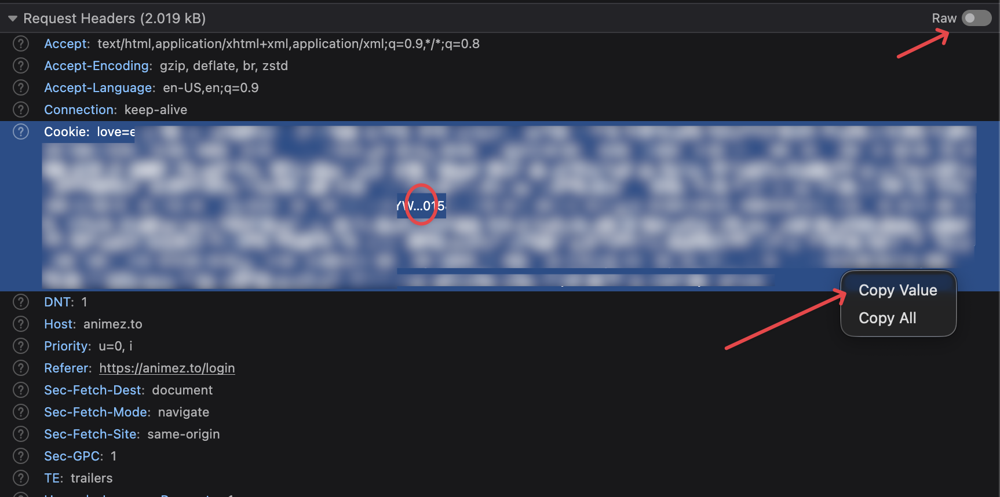

Common Error Messages¶
Error strings in the Tracker Tracker interface, with causes and fixes.
Understanding Tracker Health¶
The PulseDot next to each tracker name indicates polling status:
| State | Color | Meaning |
|---|---|---|
healthy |
Cyan | Ratio ≥ 2.0 — polling normally |
warning |
Amber | Ratio between 1.0 and 2.0, or ratio is fine but zero active seeds |
critical |
Red | Ratio < 1.0, or the tracker has warned your account |
error |
Red | The last poll failed, but polling has not paused yet |
paused |
Red | Polling has been automatically suspended after repeated failures |
offline |
Gray | No snapshot data exists yet (tracker was just added, or all snapshots were pruned) |
Ratio or Stats Not Updating¶
Stats only change when Tracker Tracker captures a new snapshot. If your ratio, upload, or seeding count looks stale, work through this checklist.
Step 1 — Check the poll interval¶
Go to Settings → General and check Tracker Poll Interval (15–1440 minutes).
If it's 240, stats update every 4 hours. That's normal.
Fastest update rate
15 minutes is the fastest. Stats won't update more often, even with page reloads.
Step 2 — Check if polling is running¶
Look at the PulseDot next to the tracker name. If it's paused or error, fix that first before worrying about stale stats. See Automatic Poll Pausing below for guidance.
Step 3 — Trigger an immediate poll¶
Don't wait for the next scheduled poll.
- Open the tracker's detail page.
- Click Poll Now.
- The page refreshes with new stats if it works.
If Poll Now returns an error, the Poll Error Banner will show the reason.
Step 4 — Check the chart time range¶
Charts show data over your selected range. A narrow range hides changes.
- Find the day range selector in the right sidebar on Data & Analytics.
- Try a broader range (30 or 90 days) to see historical data.
- If only today is selected, you'll only see today's snapshots.
Step 5 — Confirm snapshots are recording¶
If Poll Now works but charts don't move, hard-refresh first (Cmd+Shift+R on Mac, Ctrl+Shift+R on Windows/Linux).
Then check the Last Polled timestamp on the tracker detail page — it should match your most recent poll.
If Last Polled updated but the chart didn't, the API returned the same values. That's normal.
Automatic Poll Pausing¶
After 4 consecutive failed polls, the tracker automatically pauses to prevent hammering a broken tracker. When this happens:
- The PulseDot switches to
paused - The Poll Error Banner appears at the top of the tracker detail page with:
- Red "Polling Paused" heading
- Pause timestamp
- Last error (e.g.,
Authentication failed,Host not found) - Resume Polling button
Verify the cause before resuming
Fix the underlying problem first. If you resume without fixing it, the tracker will fail again and re-pause immediately.
Resuming a Paused Tracker¶
- Open the tracker detail page.
- Find the Poll Error Banner at the top with the last error below "Polling Paused".
- Fix the problem (see specific error sections below).
- Click Resume Polling, then Poll Now to verify immediately.
Tracker poll errors¶
These appear in the Poll Error Banner on the tracker detail page.
Authentication failed¶
Cause: The tracker rejected the token (HTTP 401/403 or explicit "Unauthorized"/"Forbidden").
Common reasons:
- Token was regenerated on the tracker site.
- Token was entered wrong (whitespace, partial copy).
- Account API access was revoked or restricted.
- Tracker requires an IP allowlist.
Solution
- Log into the tracker and find your API token (usually under "Security", "API", or "Edit Profile").
- Copy it carefully.
- In Tracker Tracker, edit the tracker settings and paste the new token.
- Save, then click Resume Polling, then Poll Now.
Host not found¶
Cause: DNS resolution failed for the hostname.
Solution
- Check the base URL for typos.
- Test:
nslookup <tracker-hostname>from your Docker host. - If using VPN or custom DNS, add
dns:todocker-compose.ymlif needed. - Update the base URL if the domain changed.
Host unreachable¶
Cause: Hostname resolved but unreachable at the network layer. Route missing or firewall blocking.
Solution
- Check if the tracker loads in your browser.
- Verify VPN or firewall routing is up.
- Confirm no egress firewall on Docker host is blocking outbound.
Connection refused¶
Cause: Host reached but connection refused. Usually wrong port or the tracker's down.
Solution
- Check the base URL port if the tracker uses a non-standard one.
- Verify the scheme (
https://vshttp://). - Confirm the tracker loads in a browser.
Connection reset¶
Cause: Connection established then terminated by the host. Often SSL/TLS mismatch or invalid certificate.
Solution
- Use
https://if required. - Self-signed certificates aren't supported.
Request timed out¶
Cause: API doesn't respond within 15 seconds. May happen during maintenance or heavy load.
Solution
- Wait a few minutes and try Poll Now again.
- If persistent, check if a proxy is adding latency.
- The 15-second timeout can't be changed.
IP temporarily banned by tracker¶
Cause: Tracker's rate-limiting blocked your IP. Poll interval too short or automated requests treated as abuse.
Solution
- Wait for the ban to expire — typically minutes to hours.
- Increase Poll Interval in Settings → General to 60 minutes (or higher for sensitive trackers).
- Resume polling after the ban clears.
Proxy connection failed¶
Cause: Use Proxy is enabled and the proxy is unreachable or erroring. We don't bypass required proxies.
Solution
- Check Settings → Proxy — verify host, port, type, username, password.
- Confirm the proxy is running and reachable.
- Or disable Use Proxy in tracker settings.
Stale error banner (no pause)¶
If you see a Last Error banner without "Polling Paused", a recent poll failed but not enough to trigger a pause. It clears on the next success.
No action if the last poll succeeded
The banner shows the most recent error even if later polls recovered. If the PulseDot is healthy, warning, or critical, polling already recovered.
API returned <status code>¶
Cause: API returned an unexpected status. E.g., 429 = rate limit, 500/503 = server error.
Solution
- 429: Increase poll interval and wait.
- 500 / 503: Tracker having issues — wait and retry.
- Other: Check tracker's status page or forums.
Poll failed (generic)¶
Cause: Unexpected error not matching known patterns.
Solution
Check logs: docker compose logs app for a line with Poll failed for tracker + raw error.
Download client errors¶
These appear on individual client cards in Settings → Download Clients.
Authentication failed (qBittorrent)¶
Cause: Wrong username or password.
Solution
- Confirm qBittorrent credentials in its Web UI settings.
- Update in Settings → Download Clients.
- Use Test Connection to verify.
Session expired (qBittorrent — auto-handled)¶
Cause: Session expired (HTTP 403). We re-authenticate automatically on next request.
No action needed
Handled transparently. Persistent errors are more likely wrong credentials.
Connection refused (qBittorrent)¶
Cause: Web UI not accessible at the configured host/port.
Solution
- Check host and port match qBittorrent's Web UI config.
- Confirm qBittorrent is running with Web UI enabled.
- If on a different container, confirm the port is reachable.
- Verify SSL toggle matches qBittorrent's scheme.
Host not found (qBittorrent)¶
Cause: DNS resolution failed.
Solution
Use the container name (if in same Docker stack) or an IP instead of a hostname.
Request timed out (qBittorrent)¶
Cause: qBittorrent doesn't respond within 15 seconds. May happen during heavy indexing.
Solution
Wait and retry. If persistent, check qBittorrent's CPU and memory.
Authentication and session errors (Tracker Tracker login)¶
HTTP 429 — Too many failed login attempts¶
Cause: Auto-lockout triggered after too many failed attempts.
Solution
Wait for the lockout to expire (time shown on login page). If you can't wait, connect to the database and clear lockedUntil in the appSettings table.
Login succeeds but redirects back to login¶
Cause: Session cookies marked Secure but app accessed over plain HTTP. Browsers discard Secure cookies on HTTP.
Solution
If using http://, no action needed on recent versions. If serving over HTTPS via proxy, set BASE_URL=https://your-domain.com in .env.
TOTP — Invalid code¶
Cause: Code incorrect or expired (valid 30s). Clock drift invalidates codes.
Solution
- Sync your device clock (NTP). Even 30-60s drift breaks codes.
- Wait for the next code and retry.
- Or use a backup code (
XXXX-XXXXformat, one-time use).
TOTP — Lost authenticator / no backup codes¶
Cause: No access to authenticator app and no backup codes.
Database access required
No in-app recovery. Connect to PostgreSQL and run:
Then log in and reconfigure TOTP.
Errors when adding or editing a tracker¶
Tracker test failed (AvistaZ / cookie-based trackers)¶
Cause: Cookie string contains a non-ASCII character (usually … from browser truncation).
Firefox and some Chromium browsers truncate long header values in their DevTools display, replacing the end with a … (ellipsis) character. If you select and copy the displayed text instead of using "Copy Value", the truncated string gets pasted into the dialog. HTTP headers can't contain non-ASCII characters, so the connection fails.
Solution
- Open DevTools → Network tab → click any request.
- Find the Cookie header in Request Headers.
- Right-click the Cookie header → Copy Value (do not select the text manually).
- Paste the full value into the Add Tracker dialog.

How to tell if your cookies are truncated
The Add Tracker dialog shows a yellow warning if it detects a … character in the cookie string. If you see this warning, re-copy using right-click → Copy Value.
baseUrl must use https:// or http://¶
Cause: URL uses unsupported scheme (e.g. ftp://) or missing scheme.
Solution
Prefix with https:// or http://.
baseUrl must not target localhost or a private network address¶
Cause: URL resolves to a private IP or localhost. We block these for security.
By design
Tracker URLs must be public. Internal or self-hosted trackers can't be added.